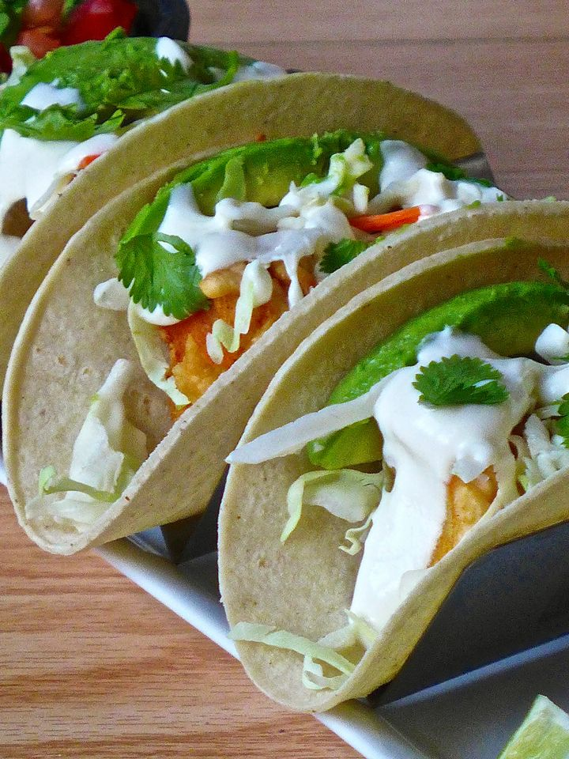

Tacoss Mexicain

Description
Le tacoss est un plat traditionnel mexicain, une tortillla garnie de légumes, de tous types de viandes ou de poisson comme les tacos de pescado.
Ingredients
- 16 tortillas de maïs ou de blé
- 100 g de mayonnaise
- 100 g de crème sure
- 5 cl de lait entier
- 1 gousse d'ail
- 3 citrons verts
- 250 g de farine
- 1 bouteille (de 35 cl) de bière brune
- 500 g de poisson blanc ferme
- ¼ tête de chou vert
- 1 avocat
- ½ botte de coriandre fraîche
- Huile végétale
-
Steps
- Mélanger la mayonnaise, la crème sûre (ou crème fraiche), le lait, l'ail et le jus d’un demi citron vert dans un petit bol.
- Couper les citrons restants en quartiers
- Faire chauffer l'huile à 180˚C dans une casserole, à feu moyen-élevé.
- Dans un bol, mélanger la farine, la bière, et le sel. La texture devrait ressembler à celle d’une pâte à pancake.
- Lorsque l'huile est chaude, tremper les morceaux de poisson dans la pâte et les faire frire jusqu'à ce qu’ils soient dorés, 3 à 4 minutes.
- Égoutter sur du papier absorbant et assaisonner de sel.
- Disposer la tortilla sur une assiette ou un support à tacos.
- Placer sur chaque tortilla un morceau de poisson.
- Garnir chaque taco avec une poignée de chou râpé, un filet de sauce, une tranche d'avocat, et quelques feuilles de coriandre.
- Servir immédiatement avec des quartiers de citron vert et une bière fraiche.